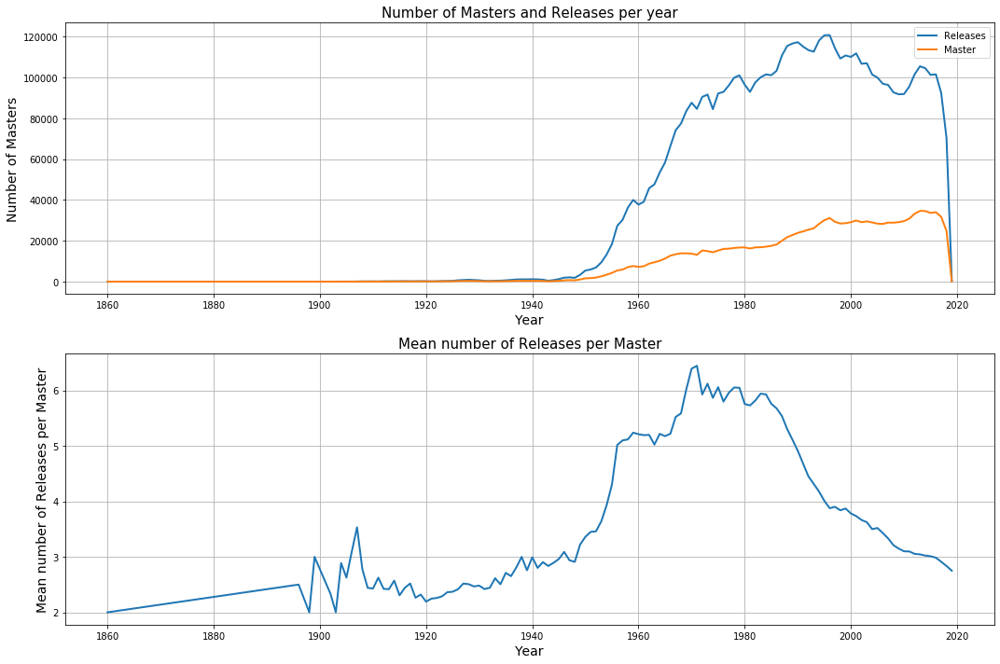
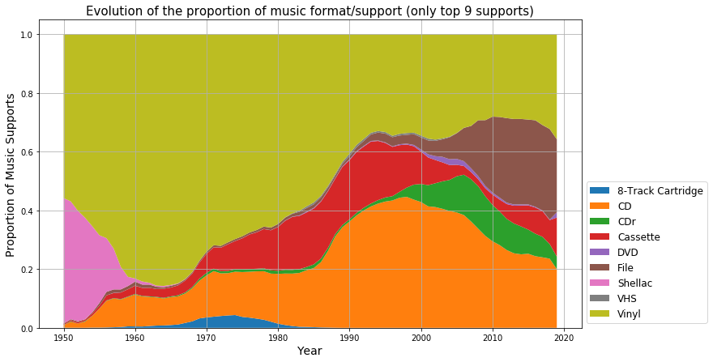
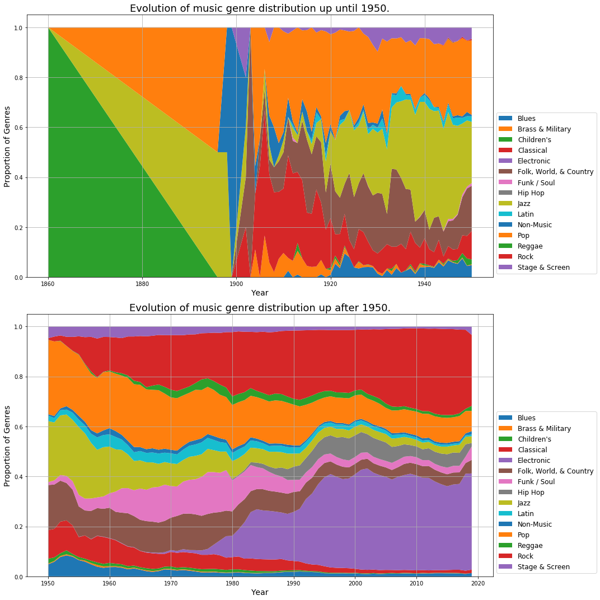
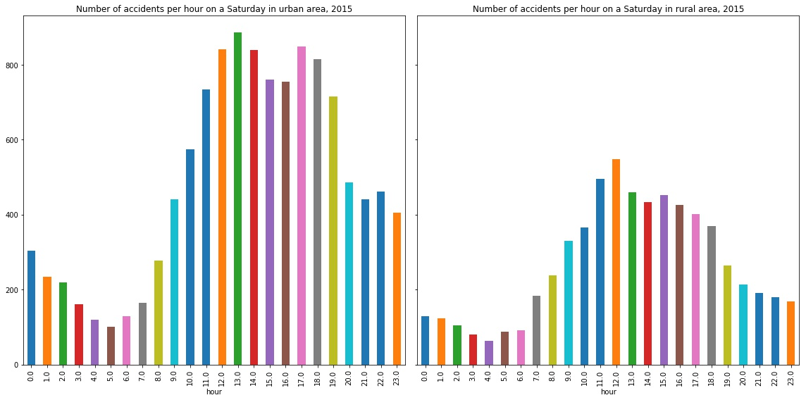
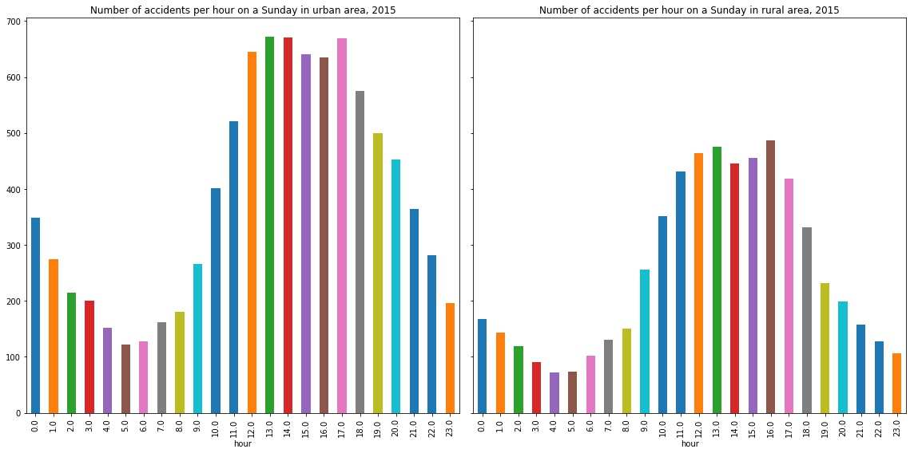
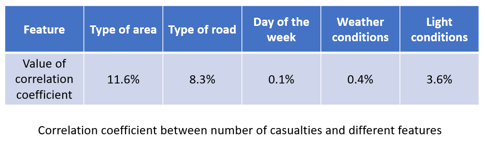
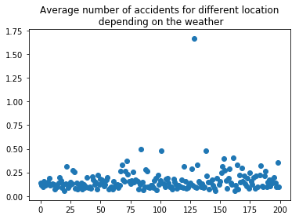
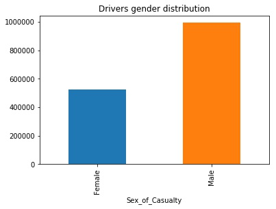

Why music industry ?
Music has thoroughly evolved in the past decades and so did its industry. Genres appeared as well as
new numerous labels that changed the music landscape. New technologies also changed the way music is
consumed, both in the music support (numeric, MP3 …) and in the way it can be shared and discovered.
To grasp at the importance of the music industry, let us say that last year, it was worth 20
billion $ only in the U.S. Although online platforms such as Spotify are on the rise, records
more popular
each year, with a +14% increase in 2018 for vinyls in the U.S. Discogs is the number 1
online worldwide records selling platform.
If you wish to know more about the technical details of our work, check our Github repo here.
Why Discogs ?
We chose to use Discogs as our Dataset for the project.
Discogs.com is an online records marketplace. It acts as a place for music collectors to buy/sell
records, as well as track the evolution of the prices of releases they consider acquiring. Discogs
is a social network as well, and users can connect to each other and share the list of their
favorite records.
A useful feature of Discogs is its API along with a Python plugin that allows to easily browse and
gather information about records, artists and labels from the database. Our aim is to download the
latest data files (XML format) to create the skeleton of our dataset and then enrich it using
the
API or web-scraping to gather more relevant informations.
A global look at the evolution of the music industry
A simple exploration of our dataset gives us the number of Master releases each
year. Each record in the Discogs database is represented by a unique Master, but can
actually be attached to several Release entities. Each Release for a record is a
commercially distributed copy of the record. It corresponds to a year of release, a country in
which it has been released, a physical support and a label. If we take for instance, the
fan-favorite classic Led Zeppelin
I record : it is associated to one Master entity, but 603 different Releases in vinyl,
compact disc or cassette over several labels and reissues.

The number of Master released per year is linearly increasing starting in the 1950s.
This evolution is indeed the actual evolution of the number of records that were released each
year. The music industry is in good shape as we see that the increase of record production isn't
about to stop !
The number of Releases per Master is also increasing in the 1960s, with a downward trend during
the
1990s. The average number of Releases per Master is obtained by counting the number of Releases
for each Master each year, and dividing by the total number of Masters in this year. This
evolution show a bump starting in the 1960s until the beginning of the 1980s. Two factors explain
this :
- here each Release is attached to its Master, and that is the year of the Master that
prevails. This means that for our beloved Led Zeppelin I (this record is crazy
good, I love it, go listen to it if you haven't already), all the 603 associated Releases
count for the year 1968, that is the year of the first release. This means that older
records are more likely to have more Releases associated than recent ones : they are
more likely to have been reprinted since it was initially released.
-
another factor explains the downfall during the 1980s : in 1982, Philips in a
collective effort with Sony, launched the first Compact Disc. It quickly became the
physical support of choice, replacing progressively the vinyl. Between the launch of the
Compact Disc, and the death of the vinyl format at the beginning of the 1990s, every
record was released both in CD and vinyl, effectively raising the number of Releases for
each record.
But we can say more about the evolution of Releases. Health of the music business is correlated
with the number of Releases as well as with the general economic health of the publishing
countries. U.S are the cultural force in the music industry for over 70 years now. From the 50s,
the post-World War II economic expansion had a huge impact on consumerism, and thus on the
music
industry in the U.S. We can hypothesize that the dip in the 70s comes respectively from the oil
crash in 1973 and the energy crisis in 1979. These events led to a period of
recession, affecting all the markets, including the music one. One could argue that the second
dip in the 2000s was caused by the internet as music piracy exploded (the famous peer-to-peer
website Nasper was launched in 1999) leading to a decline in CD sales, thus again affecting the
industry.
Let's dive into the evolution of the music formats

To corroborate what we just said above, let's have a look at the evolution of
records formats from the 1950s. As expected, the vinyl had a golden age until the beginning of
the 1990s, its death mainly caused by the arrival of the CD. But WOW, we just said that the CD
appeared in 1982, and we see that we have data for CD records even in the 1950s. Impressive.
Let's stop joking : the CD Releases are attached to their Master. That is, if a record released
in 1968, for instance Led Zeppelin I was to be released in CD during the 1980s, it would
still appear as a released in 1968 in the database, as it is the year its corresponding Master
was released.
A look at the evolution of genres
Music nowadays is quite different from what people used to listen to in the 1950s : some genres
faded into oblivion whereas some other appeared during the 21th century.
Analyse de Jan ici

Rush hours are blatant at 8am and around 5pm, plus it is interesting to notice that
the peak lasts longer in the afternoon: are people tired and thus less alert ? While on week-ends,
people seem to be moving around lunch and tea time (do not forget we are talking about UK!).
In order to understand whether accidents related to commuting are due to traffic jams or just to the
increase of drivers on the road, we compared rush hour in urban and rural areas during week days and
week-ends.


As one can see, rush hours are still seeable in rural areas even though they are less
pronounced than for urban areas. What is interesting is that the difference between rural and urban
areas decrease on Sunday: are people going to the countryside on Sunday ?
On the whole, reducing the number of vehicles involved in rush hours could led to a significant
decrease of the number of accidents: commuting at odd hours (10am - 8pm for instance) is safer than
commuting “like everyone else”.
Casualties likelihood
"Which features have the bigger correlation coefficient with the number of accidents?" That’s
the kind of question road safety experts must ask themselves everyday, in order to build efficient
road safety actions.

Once we set aside the number of vehicles involved, the two most significant features are the type of
the area (i.e. whether it is urban or rural) and the type of the road. The correlation between
the number of casualties and these features was far above its correlation with the light conditions
or the weather which are almost negligible unlike what people usually think! That’s quite
surprising, thus we decided to dig deeper to understand and maybe explain this cliché.
On the impact of weather
The common knowledge says that driving when the weather is poor is more dangerous.
Therefore, we tried to spot a difference in the number of accidents when the weather is poor
or not.
The problem is we do not know how often the weather is bad and therefore we do not have any proper
normalization.
For that reason we plotted the average number of casualties per accident given many different weather
condition:
But that plot showed that there isn’t much difference between different weather conditions.
The second step was to find the most dangerous locations in the UK and to compute the
frequencies of accidents when the weather is bad at these dangerous locations:

The plot show that there is mostly no difference across these different locations, telling us that
they are
not
more dangerous when the weather is bad. However there is a clear outlier that merits further work.
It corresponds to the location (51.498, -0.497) which we checked on Google Maps:
And the funny thing is that we discovered that this location was indeed particularly dangerous and
that
during bad weather it could be particularly difficult for a car on the right lane to be able to
enter
the road… So, act up UK!
On the justification of insurance criteria
Every driver has to be covered by a car insurance of which fares are a very sensitive topics,
depending on age, experience and even gender. Bonuses are supposed to depend on established facts
enabling the computation of the likelihood of having a car accident. For instance, some insurances
offer bonuses for female driver: to what extent can our data support this advantage?
From 2005 to 2015, data shows that female drivers almost have half as much car accident than male
drivers, justifying a bonuses for car insurance companies. Yet, we can not conclude that it is safer
to drive for women, because the difference in the number of accident could be explained by a
difference in the number of driver: yet, are men driving twice as much as women?

Is there any other features which could be taken into account to propose bonuses to client? We
investigated the other features provided in the dataset and came to the following conclusions:
- The well-known maluses for young drivers, for instance drivers under 25 in the United States, is
not
justified by our dataset: young drivers even belong to one of the less accident-prone
categories.
However insurance companies own data about the proportion of young adult driving and can,
therefore,
draw a more relevant conclusion. We lack data to properly normalize our
dataset.
- The same approach can be used for elderly which are even less accident-prone than young
drivers.
- The peak between 26 and 45 years old could be explained by intense working activity inducing a
fair
amount
and commuting, hence more risks of ending in a car accident.
-
Similarly, there is a burst in the number of accident for urban-originated driver which could
be
taken into account by insurances: depending on where you learn to drive and where you
predominantly
drive.
In a nutshell, this data is highly valuable for insurance companies because it helps
computing the likelihood of car accident for a driver depending on several characteristics. Combined
with the frequency of insured drivers it can build a relevant overview of at-risk-drivers.
One also has to notice that combining such data can be quite intrusive for insured persons
and goes against the concept of sympathy behind insurance.
Conclusion
The goal of this study was to aggregate and understand data on road accidents in the leading country
for road safety in Europe: the United Kingdom. By feeding our datasets into the Big Data blackbox,
we gained insights and highlighted trends with some surprises.
Choosing among the endless leads provided by the data has been a challenge. Yet, the biggest
challenge encountered has been the lack of information on traffic itself which forced us into
thinking
differently and come up with innovative baselines.
Finally, studying road accidents has been a very interesting and challenging topic illustrating how
data science has a highly positive and concrete impact on policies and government decisions.